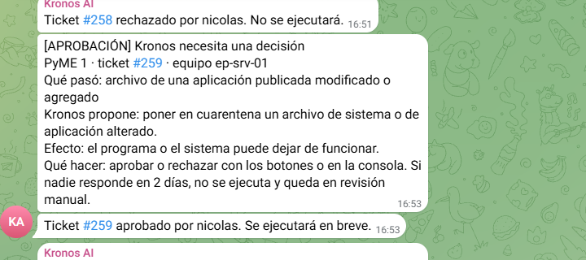
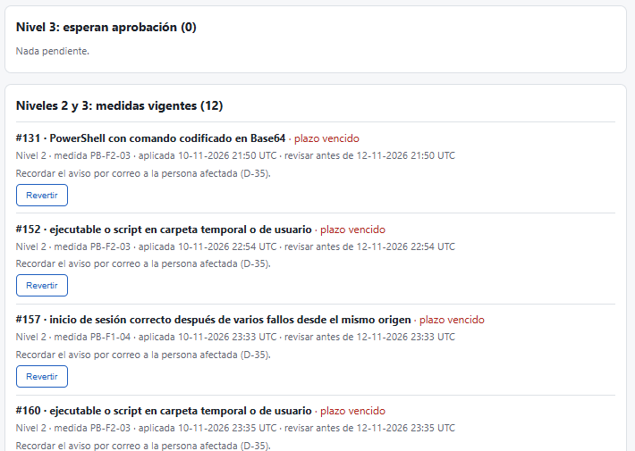
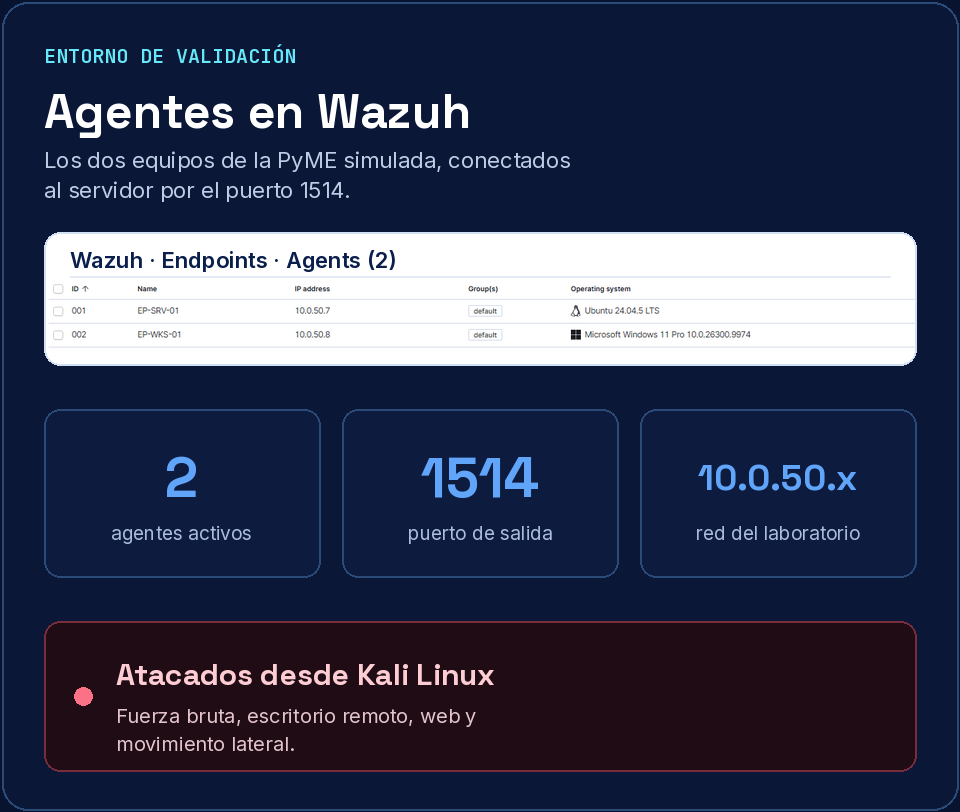

SOAR con inteligencia artificial para PyMEs sin especialista en ciberseguridad
01 · El problema
Una PyME enfrenta las mismas amenazas que una gran empresa, pero no puede pagar un analista de seguridad ni un centro de operaciones.
de las empresas formales en Chile son micro, pequeñas o medianas.
Servicio de Impuestos Internos · 2023aumentaron los delitos ingresados a la Fiscalía en 2025, impulsados por el alza de los ciberdelitos.
Fiscalía Nacional · Boletín Anual 2025incidentes de seguridad se reportaron a la ANCI en su primer año de funcionamiento.
Agencia Nacional de Ciberseguridad · 2025Sabe de equipos y redes, no de ciberseguridad. Atiende soporte, cuentas y compras. Una alerta que nadie revisa de noche o el fin de semana es igual a no tenerla.
02 · La solución
Kronos AI detecta, decide y responde ante incidentes de seguridad, a toda hora. El encargado de TI sigue teniendo la última palabra.
Wazuh 4.14.8 y 28 reglas propias que reconocen seis familias de incidentes.
Un modelo de IA local identifica la familia del incidente. Los datos no salen del servidor.
La IA decide la medida según el código, con seis chequeos antes de tocar un equipo.
25 playbooks con actuador real en Linux y Windows, ejecutados por Active Response.
Telegram y una consola web para aprobar, rechazar o revertir cada medida.
Una bitácora inalterable, con cadena de hash por cliente, registra cada paso.
03 · Arquitectura
04 · Funcionamiento
El agente envía el evento al servidor por 1514/TCP.
Wazuh lo reconoce y lo etiqueta con su familia y severidad.
VALIDATE crea un ticket único y oculta la etiqueta a la IA.
La IA identifica la familia del incidente.
La IA decide la medida del catálogo cerrado.
La decisión se ajusta al código; si no, pasa a revisión humana.
EXECUTE ordena el Active Response en el equipo.
Telegram, consola y bitácora encadenada.
del ataque a la medida aplicada en un servidor Linux
del ataque a la medida aplicada en un puesto Windows
por alerta en la IA en la medición final, con el modelo siempre cargado
05 · Infraestructura
CONTABO CLOUD VDS · FRANCIA (UE)
SSH, consola, API de Wazuh e indexer sólo por NetBird, fuera de internet.
1514/TCP, el canal cifrado por el que llegan los agentes.
SSH sin contraseña, sin root y sólo para cuentas personales.
Cada servicio con su usuario. EXECUTE sólo puede enviar órdenes de respuesta.
Archivos de Docker con permisos mínimos, nunca en el repositorio.
Base y Wazuh cifrados con age, 14 copias y una copia fuera del servidor.
06 · Herramientas
Kronos combina herramientas abiertas y maduras. Cada una cumple un rol y se conecta con las demás por un punto definido.
Reúne y analiza los registros. 28 reglas propias etiquetan cada ataque con su familia. Entrega las alertas en alerts.json y recibe las órdenes por su API.
Un agente en cada equipo envía eventos por 1514 y ejecuta la respuesta: 10 scripts en Linux y Windows. La PyME no abre puertos.
La IA corre en el servidor, sin GPU y sin salir a internet. Decide en dos pasos; sólo VALIDATE la consulta por la red interna.
Cuatro servicios —validar, ejecutar, avisar y consola— en una sola imagen, sin privilegios y de sólo lectura.
Guarda los tickets y una bitácora encadenada con hash, imposible de alterar. Multiinquilino, con seguridad a nivel de fila.
La consola web del encargado, sin JavaScript, sólo por NetBird y con contraseña y TOTP. Aprueba, rechaza y revierte.
Avisa al teléfono en lenguaje claro y recibe la aprobación con un botón. Sólo conexiones salientes.
NetBird: red privada de administración. Docker: cada servicio aislado en su red. GitHub: versiones y CI con más de 750 pruebas.
07 · Familias de incidentes
Cada alerta pertenece a una familia, definida por el comportamiento que se observa en el equipo.
Lo anómalo es la autenticación o el uso de una cuenta.
Se detecta conFuerza bruta por SSH, contraseñas adivinadas en Windows, acceso exitoso tras varios fallos.
Un programa que se ejecuta y actúa sobre el mismo equipo.
Se detecta conPowerShell codificado, herramientas del sistema mal usadas, ejecutables en carpetas temporales.
Un equipo que accede a otro o lo controla a distancia.
Se detecta conEscritorio remoto, ejecución remota, saltos por SSH entre equipos internos.
Datos o tráfico que salen del equipo de forma inusual.
Se detecta conProgramas de carpetas de usuario o herramientas de transferencia que conectan hacia fuera, nombres disfrazados.
Un cambio que queda instalado en el sistema.
Se detecta conArchivos vigilados alterados, cuentas nuevas, tareas programadas, registros de auditoría borrados.
Un servicio que cae o se degrada.
Se detecta conInundación y ataques web, servicios detenidos, disco lleno, agente desconectado.
08 · Decisión
Sin la etiqueta de familia y con los campos recortados.
Una de las seis familias.
Sólo medidas posibles de esa familia.
Respuesta válida y confianza mayor o igual a 0,70
La familia coincide con la regla de sobre
La medida existe y pertenece a esa familia
El objetivo no está en la lista de exclusión
Cortacircuito cerrado y límites de tasa disponibles
El nivel de la medida está permitido por la severidad
Si un chequeo no se cumple, el equipo no se toca y el caso pasa a revisión humana.
09 · Niveles de autonomía
Cuánto puede hacer Kronos sin preguntar depende de la medida y de la gravedad de la alerta.
Reúne información del equipo por la API: inventario, procesos y puertos. Sin impacto.
Actúa solo y de inmediato. Los bloqueos de red se revierten solos a los 60 minutos.
Ejecuta y avisa por Telegram. El encargado la revisa y la revierte desde la consola.
Espera la aprobación del encargado por Telegram o consola. Si nadie aprueba en 2 días, no se ejecuta.
10 · Catálogo de respuesta
Todos operativos en Linux y Windows, construidos sobre 10 acciones de Active Response.
11 · Control y trazabilidad
Arma la orden desde una tabla fija y la envía por la API de Wazuh con un usuario de permisos mínimos.
Valida IP, cuentas, rutas y procesos antes de enviar, y programa la reversión.
Mensajes en lenguaje claro: qué pasó, qué hizo Kronos y qué debe hacer el encargado.
Botones Aprobar y Rechazar para las medidas de nivel 3.

assets/img/telegram-aviso.png760 × 560Consola web sólo por NetBird, con contraseña y código TOTP.
Medidas vigentes, aprobaciones, reversiones y cierre del cortacircuito.

assets/img/consola-kronos.png760 × 560PostgreSQL 17 con bitácora de sólo inserción. Cada evento enlaza el hash del anterior.
Datos aislados por cliente con seguridad a nivel de fila.
12 · Validación
Siete escenarios en la PyME simulada: fuerza bruta externa e interna, contraseña adivinada, registro borrado, inyección de instrucciones, ráfaga de alertas y modelo detenido.
Parte A: cada acción aplicada y revertida en los dos sistemas. Parte B: los 25 playbooks de punta a punta, con ataques desde Kali Linux.
13 · Entorno de validación
Un comercio ficticio de 15 trabajadores en Santiago, con un servidor y puestos de trabajo, conectado por internet al servicio en la nube, igual que una PyME real.

assets/img/laboratorio.png960 × 81214 · Demostración
En cada video verán las mismas cuatro pantallas, en el orden en que ocurre el incidente.
El atacante lanza el ataque contra un equipo de la PyME.
La regla de sobre detecta el evento y lo etiqueta.
Kronos avisa y, en el nivel 3, pide aprobación.
El encargado revisa la medida vigente y la revierte.
Kronos bloquea la IP del atacante sin esperar a nadie.
Deshabilita la cuenta, avisa y el encargado la revierte.
Pide aprobación y pone en cuarentena el archivo.
Aísla el servidor comprometido de la red.
Kali intenta entrar por SSH con contraseñas al azar.
Wazuh activa la regla 100101, severidad 10.
La IA clasifica F1 y elige bloquear la IP externa.
La decisión cumple los seis chequeos: nivel 1, sin esperar a nadie.
La IP queda bloqueada en el firewall y Kali pierde el acceso.
A los 60 minutos el bloqueo se revierte solo.
assets/videos/01-nivel1-fuerza-bruta-ssh.mp4MP4 · 1920 × 1080Intentos fallidos contra la cuenta usuario.demo.
Windows bloquea la cuenta y Wazuh activa la regla 100103.
La IA elige deshabilitar la cuenta local.
Kronos la deshabilita y avisa por Telegram.
El encargado revisa el caso en la consola.
La revierte con un clic: la cuenta vuelve a estar habilitada.
assets/videos/02-nivel2-cuenta-deshabilitada.mp4MP4 · 1920 × 1080Se reemplaza la portada del sitio web de la PyME.
La vigilancia de archivos activa la regla 100121, severidad 12.
La IA elige poner en cuarentena el archivo alterado.
Kronos pide aprobación por Telegram, con botones.
El encargado aprueba: el archivo pasa a cuarentena.
La bitácora registra quién aprobó y cuándo.
assets/videos/03-nivel3-sitio-alterado.mp4MP4 · 1920 × 1080Desde el servidor comprometido se intenta saltar por SSH a otro equipo.
auditd lo registra y Wazuh activa la regla 100128.
La IA clasifica movimiento lateral y elige aislar el servidor.
El encargado aprueba por Telegram.
El servidor queda aislado: sólo mantiene el canal con Kronos.
Se revierte desde la consola cuando el incidente está controlado.
assets/videos/04-nivel3-servidor-aislado.mp4MP4 · 1920 × 1080